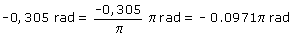

|
Calcular: asen (-0,3) asen (-0,3) = -0,305 rad Solución en función de π:  Solución con signo positivo: (2π - 0,0971π) rad = 1,903π rad El otro ángulo que tiene el mismo seno: (π - 1,903π) rad = -0,903π rad Expresado con signo positivo: (2π - 0,903π) rad = 1,097π rad (Observa los dos ángulos suman 3π rad que es lo mismo que π rad) |